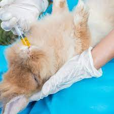
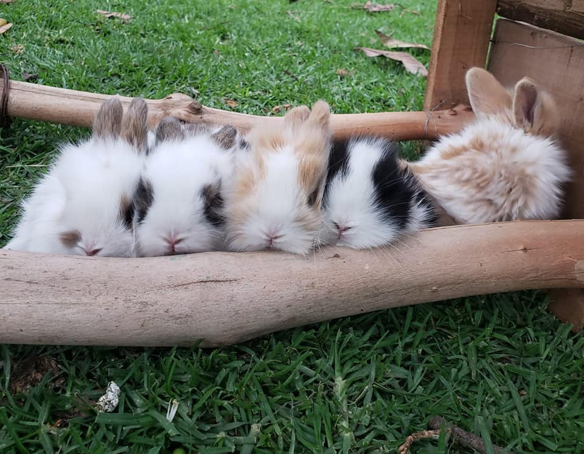

Los
mejores productos para desparasitar conejos, los encuentras con nosotros.

Cada vez son más los hogares que cuentan con la compañía de un conejo.
Estos pequeños y adorables animales, aunque no lo parezca, pueden ser
portadores de parásitos internos y externos que incluso llegan a
transmitirse a los humanos, de ahí la importancia de conocer los
productos y los métodos de desparasitación en conejos, así como
establecer un calendario de desparasitaciones que pueda servirnos como
preventivo. Desparasitar, vacunar, esterilizar, alimentar correctamente
y proporcionar un entorno adecuado van a ser los pilares de la salud de
nuestro conejo
Nuestros ejemplares son de la mejor linea.
Contamos con razas
puras, por la cual garantizamos la calidad de nuestros animales,
teniendo la mejor alimentacion y el mejor control desde la monta,
nacimento de los gazapos hasta la entrega de las crias a su nuevo
dueño, por la cual garantizamos la que su nueva mascota esta protegida.
